This work is licensed
under a Creative
Commons Attribution-ShareAlike 2.5 Spain License
This work is licensed
under a Creative
Commons Attribution-ShareAlike 2.5 Spain License
|
"Robótica Modular y Locomoción”. III Jornadas de Robótica en la Universidad de Cádiz. Semana de la ciencia y la tecnología. UCA. Cádiz. Nov. 2006 |
|
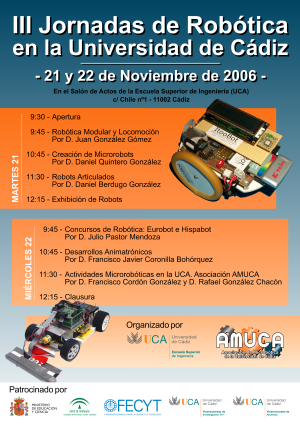 |
Título de la charla: “Robótica Modular y Locomoción”
Duración: 1 hora
Evento: III Jornadas de robótica. Semana de la ciencia y la tecnología. UCA.
Organiza: Asociación de Microbótica (AMUCA) y Escuela Superior de Ingeniería de la Universidad de Cádiz
Coordinador de las jornadas: D. Arturo Morgado Estévez.
Lugar: Escuela Superior de Ingeniería de la Universidad de Cádiz
Fecha: 21 de Noviembre de 2006
Ponente:
Programa del evento (Folleto)
En esta charla se presentan y resumen los trabajos de investigación realizados por Juan Gonzalez en el campo de la robótica modular y la locomoción. Se comienza con una introducción a la robótica en general, donde se clasifican los robots móviles y se enuncia el problema de la locomoción. Se introducen las ideas de la robótica modular y se muestra algunos de los robots modulares más avanzados. En la segunda parte se describen los Módulos Y1, diseñados para poder construir diferentes configuraciones de robots y hacer experimentos. Se caracterizan porque son muy baratos y fáciles de construir.
En el campo de la locomoción de robots modulares hay dos grandes retos a resolver. Por un lado encontrar un método general para controlar los robots independientemente de la forma que tengan. Y por otro lado encontrar una metodología para abordar el estudio de las infinitas posibles configuraciones que puede haber. Para afrontar el primer reto se propone utilizar un modelo bioinspirado basado en la idea de aplicar generadores sinusoidales que controlen cada una de las articulaciones. Para el segundo problema, se establece una clasificación de los robots modulares según su topología y se buscan las configuraciones mínimas dentro de cada grupo. Estas son los robots con el menor número posible de módulos que se pueden mover. Para evaluarlas se utiliza un simulador y la búsqueda se realiza mediante algoritmos genéticos.
Dentro del campo de los robots con una topología de una dimensión, se muestran las dos configuraciones mínimas que se han encontrado. La primera, configuración PP, está constituida por dos módulos y sólo se puede desplazar en línea recta (una dimensión). La segunda, PYP, es capaz de realizar cuatro maneras de caminar diferentes: línea recta, arco, desplazamiento lateral y rodar.
Otras configuraciones con mayor número de módulos que se han construido son los robot Cube Revolutions e Hypercube, formados ambos por 8 módulos Y1. Cube Revolutions sólo se mueve en línea recta y se puede conseguir su movimiento aplicando la misma coordinación encontrada en la configuración mínima PP. Además, se pueden utilizar otros métodos de locomoción, sólo válidos para configuraciones con topología de una dimensión. Uno de ellos está basado en la propagación de ondas globales. Hypercube es un robot modular con una topología de una dimensión que es capaz de moverse en sobre un plano (y no sólo en línea recta). Al menos puede realizar 5 tipos diferentes de maneras de caminar: línea recta, arco, desplazamiento lateral, rotación lateral y rodar.
Por último se presentan las conclusiones y se muestran los nuevos módulos ZG que se han diseñado para probar nuevas configuraciones.
Se permite la copia, distribución y modificación de este documento siempre y cuando se siga manteniendo con la misma licencia
|
|
|
Descarga de la presentación |
|
Presentación para OpenOffice 2.0 |
|
|
Presentación en PDF |
Algunos de los vídeos que se mostraron en la presentación:
Un módulo Y1 en movimiento [Vídeo].
Conexión de dos Módulos Y1 con la misma orientación [Vídeo].
Conexión de dos módulos Y1 con diferentes orientaciones [Vídeo].
La configuración PP moviéndose hacia adelante y hacia atrás [Vídeo].
La configuración PP cuando las ondas están en fase [Vídeo].
La configuración PP cuando las ondas están en oposición de fase [Vídeo]
Configuración PYP moviéndose en línea recta [Vídeo]
Configuración PYP describiendo un arco [Vídeo]
Configuración PYP moviéndose lateralmente [Vídeo]
Configuración PYP rodando lateralmente [Vídeo]
Cube Revolutions moviéndose mediante ondas periódicas [Vídeo]
Cube Revolutions moviéndose con semi-ondas [Vídeo]
Cube Revolutions haciendo la cobra [Vídeo].
Cube Revolutions enrollándose [Vídeo].
Cube Revolutions moviéndose como una rueda [Vídeo]
Tux montando sobre Cube revolutions ;-) [Vídeo]
Friki-cube moviéndose [Vídeo]
Friki-cube haciendo la cobra [Vídeo]
Hypercube moviéndose en línea recta [Vídeo]
Hypercube describiendo un arco [Vídeo]
Hypercube moviéndose lateralmente [Vídeo]
Hypercube rotando paralelamente al suelo [Vídeo]
Hypercube rodando [Vídeo]
Hypercube con forma de cuadrado [Vídeo]
Información sobre los módulos Y1
Robot Cube Revolutions
Artículo: “Locomotion of a Modular Worm-like Robot using a FPGA-based embedded MicroBlaze Soft-processor”, sobre Cube Revolutions (en inglés)
Artículo: “Evaluation of a locomotion algorithm for worm-like robots on FPGA-embedded processors”. Sobre Cube Revolutions. (En inglés).
Artículo: “Motion of Minimal Configurations of a Modular Robot: Sinusoidal, Lateral Rolling and Lateral Shift”. Sobre las configuraciones mínimas (en inglés).
Artículo: “Locomotion of a Modular Robot with Eight Pitch-Yaw-Connecting Modules”. Sobre Hypercube (en inglés).
Las jornadas de robótica se celebraron los días 21 (martes) y 22 (miércoles) de Noviembre. Arturo Morgado, el coordinador de las jornadas y subdirector de investigación de la Escuela Superior de Ingeniería de la UCA, me invitó una vez más a asistir como ponente, para contar y enseñar mis últimos robots. Ya había estado también durante las primeras y segundas jornadas. Para mí es un auténtico privilegio poder ir a Cádiz a enseñar mis robots. Allí pasé 6 meses haciendo el servicio militar. Por eso tengo mucho cariño a la ciudad :-)
Fuí a las jornadas en tren. Salí de Madrid a las 16:30 y llegué sobre las 21:45 del lunes 21. Cogí un taxi y fui directo al parador atlántico, donde me alojaba, igual que los años anteriores. Todo un lujo, con las vistas al mar que se ven en la foto de izquierda. Este año, Alejandro Alonso y Andrés Prieto-Moreno no pudieron asistir. Los echamos de menos.
El martes comenzaron las jornadas. Fueron inauguradas por el Excmo. Sr. D. David Almorza Gomar, (en la parte central de la mesa en la foto de la derecha) Vicerrector de Alumnos, el Ilmo. Sr. D. Mariano Marcos Bárcena, (situado a la derecha), Director de la Escuela Superior de Ingeniería y D. Arturo Morgado Estévez, (a la izquierda, según se mira la foto).
|
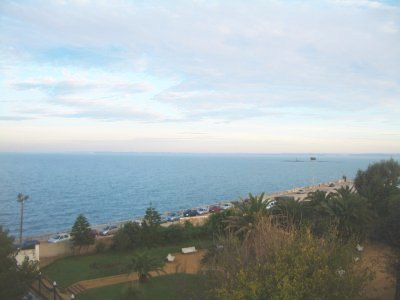 |
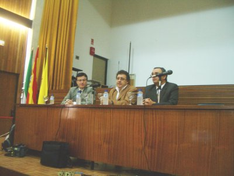 |
En el salón de actos no cabía ni un alma. Estaba abarrotado (foto de la izquierda). Mi ponencia fue la primera: “Robótica modular y locomoción”. Hice un resumen de los robots modulares que había enseñado las pasadas jornadas y hablé de la nueva versión: Hypercube. En la foto de la derecha se puede ver el despliegue de robots que llevé: Hypercube, dos configuraciones mínimas de dos módulos, una hecha con módulos Y1 y la otra con los nuevos módulos ZG que desarrollé junto a Houxiang Zhang durante mi estancia en Hamburgo. También se pueden ver dos módulos Y1 negros sueltos.
Esta ha sido la primera charla en la que he enseñado un robot construido con los módulos ZG.
|
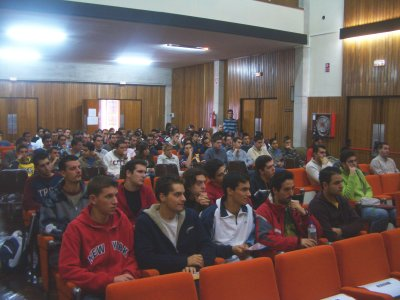 |
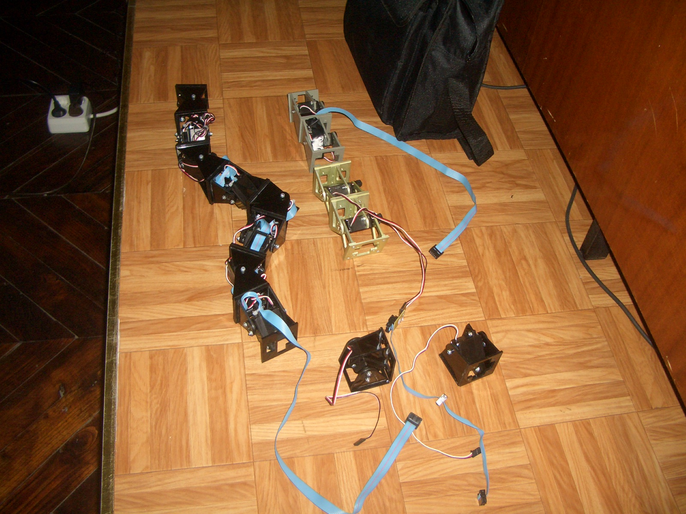 |
La siguiente ponencia la dió Daniel Quintero sobre su robot Telémaco, con el que ganó el primer premio en la prueba libre de la CampusBot 2006. Yo no había tenido la oportunidad de ver a Telémaco en acción en la Campus. Pero en esta ponencia lo pude ver funcionando. Y me quedé impresionado. Sin ninguna duda era el mejor robot de todos los presentados a la prueba libre de la Campus. Merecedor del primer premio. En la foto de la derecha estamos Dani, Telémaco y yo.
|
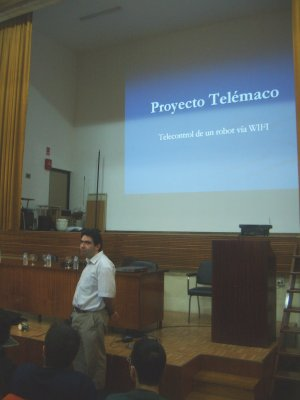 |
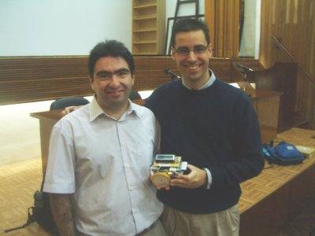 |
La siguiente ponencia la dió Daniel Berdugo, sobre robots articulados (foto de la izquierda) y por último se hicieron demostraciones de todos los robots. En la foto de la derecha está Telémaco junto a Hypercube, dos configuraciones PP y un par de módulos Y1 sueltos.
|
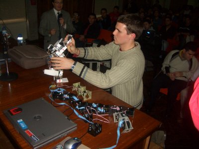 |
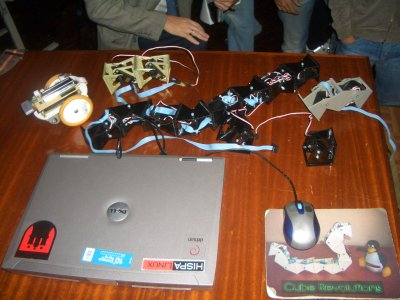 |
Con esto finalizó el primer día de las Jornadas. Paco Cordón y Rafael González me estuvieron enseñando el local de AMUCA, donde cacharrean con los robots. En la foto de la izquierda los podemos ver junto a Andalbot, el nuevo robot que van a utilizar para dar talleres de robótica. Un diseño muy sencillo y fácil de montar, basado en una modificación de la placa NanoC V1.5.
Luego nos fuimos a comer. En la derecha estamos junto al cartel de anuncio de las III jornadas de robótica. De izquierda a derecha y de arriba a abajo: Juan González, Daniel Berdugo, Francisco Cordón, Rafael González, Daniel Quintero , Arturo Morgado y Francisco Javier Coronilla.
|
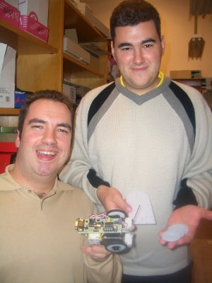 |
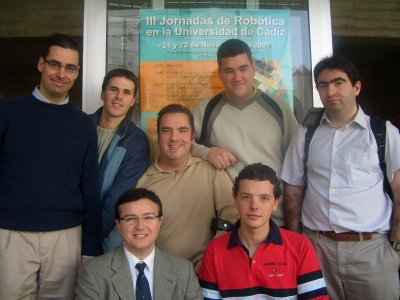 |
|
|